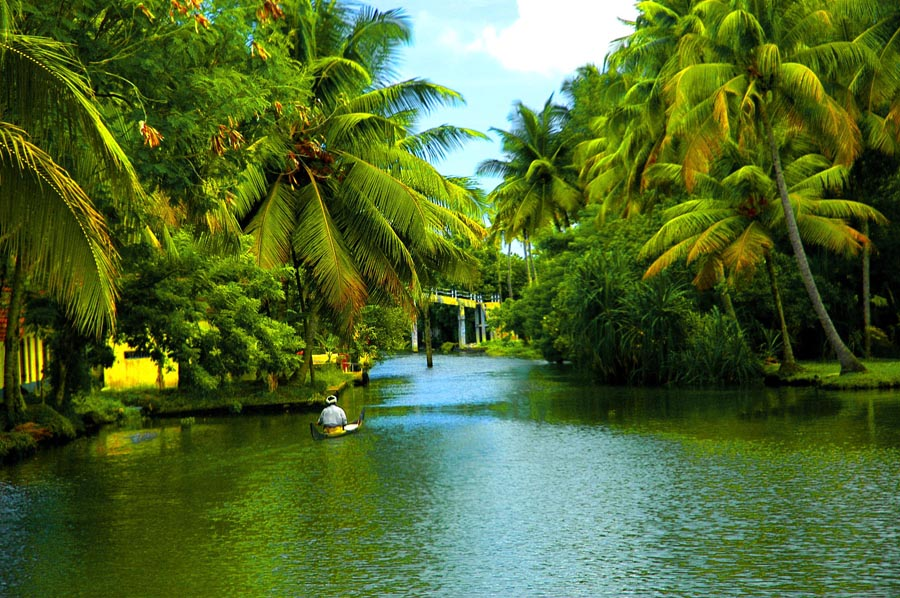

Himachal Pradesh is a state in the northern part of India.
Situated in the Western Himalayas, it is one of the thirteen mountain states and
is characterised by an extreme landscape featuring several peaks and extensive river systems

Kerala
Kerala, a state on India's tropical Malabar Coast, has nearly 600km of Arabian Sea shoreline.
It's known for its palm-lined beaches and backwaters, a network of canals. Inland are the Western Ghats,
mountains whose slopes support tea, coffee.
Bhambavali Vajraj Waterfall
Bhambavali Vajraj Waterfall is the tallest waterfall of India. Tha height of this waterfall is 1840ft.
The waterfall is Situated in distraict of Satara in Western Maharashtra. It is about 5km away from well known Kas Flower valley.